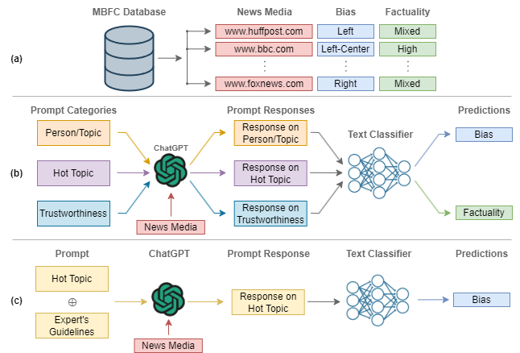
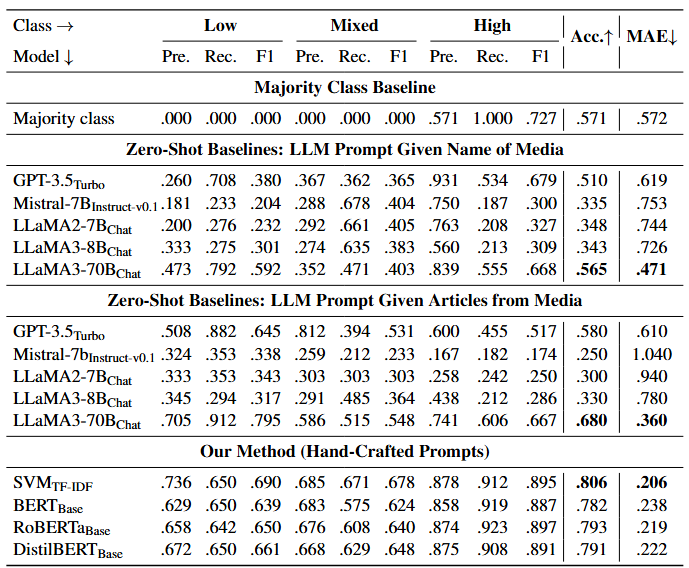
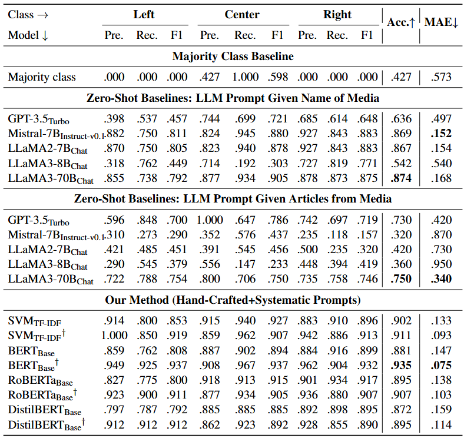
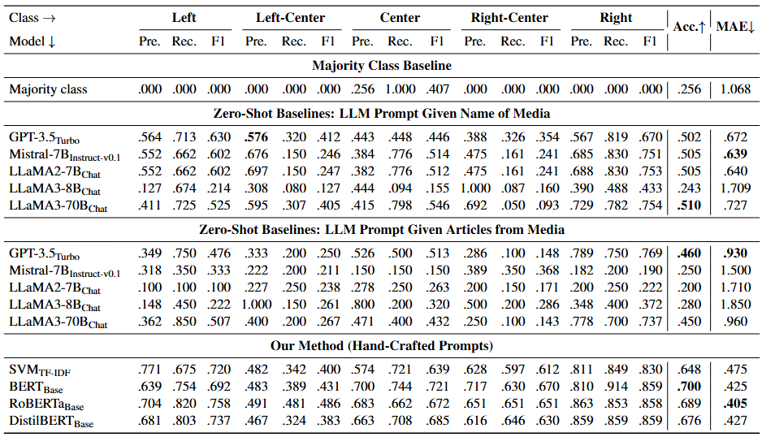
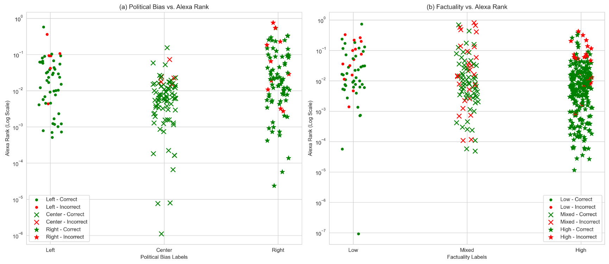
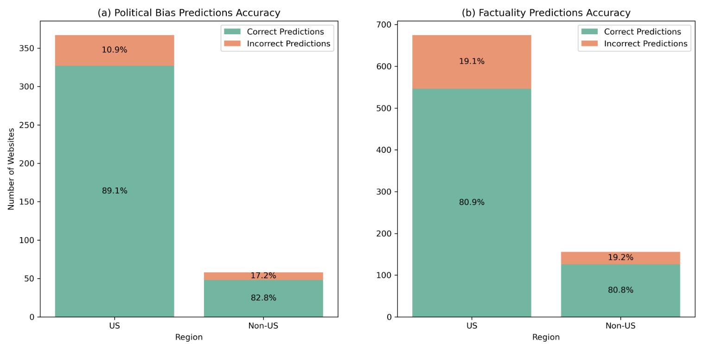

In an age characterized by the proliferation of mis- and disinformation online, it is critical to empower readers to understand the content they are reading. Important efforts in this direction rely on manual or automatic fact-checking, which can be challenging for emerging claims with limited information. Such scenarios can be handled by assessing the reliability and the political bias of the source of the claim, i.e., characterizing entire news outlets rather than individual claims or articles. This is an important but understudied research direction. While prior work has looked into linguistic and social contexts, we do not analyze individual articles or information in social media. Instead, we propose a novel methodology that emulates the criteria that professional fact-checkers use to assess the factuality and political bias of an entire outlet. Specifically, we design a variety of prompts based on these criteria and elicit responses from large language models (LLMs), which we aggregate to make predictions. In addition to demonstrating sizable improvements over strong baselines via extensive experiments with multiple LLMs, we provide an in-depth error analysis of the effect of media popularity and region on model performance. Further, we conduct an ablation study to highlight the key components of our dataset that contribute to these improvements. To facilitate future research, we released our dataset and code.

We adopt two main prompt strategies to elicit outlet-level insights from LLMs:
These LLM responses are concatenated and passed to text classification models. We also present two case studies where we obtain zero-shot predictions from the LLMs by providing the media name and some of its recently published articles.
low, mixed, highleft, left-center, center, right-center, rightEvaluation results for the experiments on our dataset for predicting the factuality of the reporting of the news media, grouped by different modeling methodologies.

Evaluation results for the political bias prediction task (3 and 5 class), grouped according to the different modeling methods used. Each model marked with the symbol † was trained on data from the systematic prompts.


Best model performance vs. media outlet popularity. (a) Political bias labels, and (b) Factuality labels plotted against Alexa Rank (log scale). Each point represents a media outlet with its original label. Green markers indicate correct predictions, and red markers indicate errors. A lower Alexa Rank means a more popular medium.

Correct vs. incorrect predictions for U.S. and non-U.S. media outlets, highlighting higher accuracy for U.S.-based outlets.

@inproceedings{mujahid-etal-2025-profiling,
title = "Profiling News Media for Factuality and Bias Using {LLM}s and the Fact-Checking Methodology of Human Experts",
author = "Mujahid, Zain Muhammad and
Azizov, Dilshod and
Agro, Maha Tufail and
Nakov, Preslav",
editor = "Che, Wanxiang and
Nabende, Joyce and
Shutova, Ekaterina and
Pilehvar, Mohammad Taher",
booktitle = "Findings of the Association for Computational Linguistics: ACL 2025",
month = jul,
year = "2025",
address = "Vienna, Austria",
publisher = "Association for Computational Linguistics",
url = "https://aclanthology.org/2025.findings-acl.45/",
pages = "798--819",
ISBN = "979-8-89176-256-5"
}